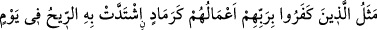
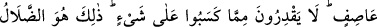
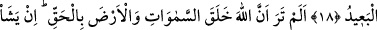
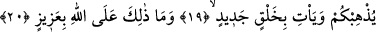
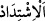

O DİLERSE…
18. Rablerini inkâr edenlerin amelleri, tıpkı fırtınalı bir günde rüzgarın şiddetle
savurduğu küle benzer. Kazandıklarından hiçbir şey elde edemezler. İyiden iyiye
sapıtma işte budur..
19. Allah’ın gökleri ve yeri hak ile yarattığını görmedin mi? O dilerse sizi ortadan
kaldırır ve yepyeni bir halk getirir.
20. Bu, Allah’a güç değildir.
“Rablerini inkâr edenlerin amelleri” yâni, gariplik konusunda bir darb-ı mesel
olabilecek kadar hayret verici olan durumları, hal ve sıfatları, “tıpkı fırtınalı bir günde
rüzgarın şiddetle savurduğu küle benzer.” Ya da size okunan bu âyetlerde onların
durumu, mevcuttur.
“Fırtınalı bir günde’”, rüzgarının çok şiddetli ve kuvvetli estiği bir günde demektir.
Rüzgar lafzı hazfedilmiş ve ‘yağmurlu gün, sâkin gece” ifâdelerinde olduğu gibi mecâzî
olarak güne fırtınalı denmiştir. “Sâkin gece” denildiğinde de sâkinlik gecede değil,
rüzgardadır.
Burada “__WORD__ el-İştidâd (savurmak)”, önüne katıp süratle götürmek demektir.
“Kazandıklarından hiçbir şey elde edemezler.” Yâni tıpkı rüzgarda savrulan külden
hiçbir netice elde edemedikleri gibi dünyâda kazandıkları iyi amellerinin karşılığında
ne bir sevap ne de azâbın hafiflemesi şeklinde bir sonuç elde ederler.
“İyiden iyiye” sâhibinin hak ve doğru yoldan yahut sevâba nâil olmaktan fersah fersah
uzak olduğu “sapıtma işte budur.” Yâni, bu temsîlî anlatımın apaçık bir şekilde
gösterdiği sapıklıktır. Yâni onların inkârları; inkâra, böbürlenme ve gösterişe dayanan
amelleri, en derin sapıklıktır. Hem de kendilerini iyi yolda kimseler zannetmektedirler.
Bu, koyu bir cehâlet (cehl-i mürekkeb) ve onulmaz bir hastalıktır. Çünkü bu ameller
onlara çok güzel gösterildiğinden günahkâr müminler gibi tevbe edip bağışlanma da
dilemezler.
‘Sapan’ kişinin bir durumu olan uzaklık, işin hangi noktaya vardığını mübâlağalı
olarak göstermek için mecâzen onun bir fiili olan ‘sapma’ya isnâd edilmiştir. Allah
Teâlâ, kâfirlerin yaptığı sadaka verme, sıla-i rahim, köle âzâd etme, esiri serbest